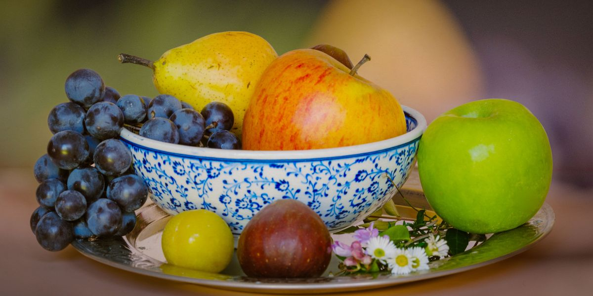
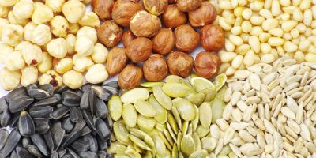
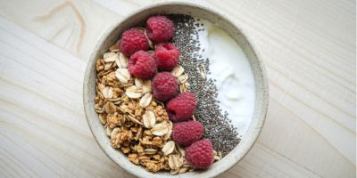

Combustível Real: Como Hackear a sua Energia Diária através da Nutrição
Conselho Editorial Portal BioMed
Guia sobre metabolismo e nutrição funcional

O Perigo dos Picos de Açúcar
Quando você consome carboidratos refinados, a sua glicose sobe rapidamente. O corpo libera insulina, a glicose cai bruscamente e o cérebro entra em "modo pânico", causando fadiga, irritabilidade e névoa mental. Buscamos energia linear, não picos.
Os 5 Pilares da Vitalidade

Nozes e Sementes
Ricos em gorduras saudáveis e magnésio, mineral chave em mais de 300 reações enzimáticas que produzem energia celular (ATP).
Abacate
O seu alto teor de gorduras monoinsaturadas proporciona um fluxo constante de energia para o cérebro e estabiliza o açúcar no sangue.

Aveia Integral
Ao contrário do pão branco, a aveia é digerida lentamente, liberando glicose de forma gradual durante horas.
Ovos de Granja
Contêm colina e B12, essenciais para o funcionamento neuronal e a síntese de energia física.
O Papel da Hidratação Celular
Muitas vezes confundimos fadiga com fome, mas a realidade é desidratação leve. Sem água suficiente, o volume sanguíneo diminui e o coração deve trabalhar mais para bombear oxigênio, o que o faz sentir exausto.
Protocolo BioMed de Energia Matinal
- ✅ Água ao acordar: 500ml de água antes do café.
- ✅ Proteína no café da manhã: Evite os cereais açucarados.
- ✅ Luz Solar: 10 minutos de sol para resetar o ritmo circadiano.
Conclusão
A sua energia é o resultado dos sinais químicos que envia para as suas células. Escolher alimentos densos em nutrientes em vez de calorias vazias transformará não só o seu desempenho profissional, mas também a sua qualidade de vida a longo prazo.
Fonte: Departamento de Nutrição e Metabolismo / Portal BioMed.
Sofrendo com Formigamentos e Queimação nos Pés e Mãos?
A neuropatia periférica pode acabar com o seu sono e qualidade de vida. Nossa equipe clínica publicou um laudo detalhado sobre um novo suplemento natural neurotrópico que está ajudando a restaurar a saúde dos nervos no Brasil.
Ver Análise Completa do Especialista →